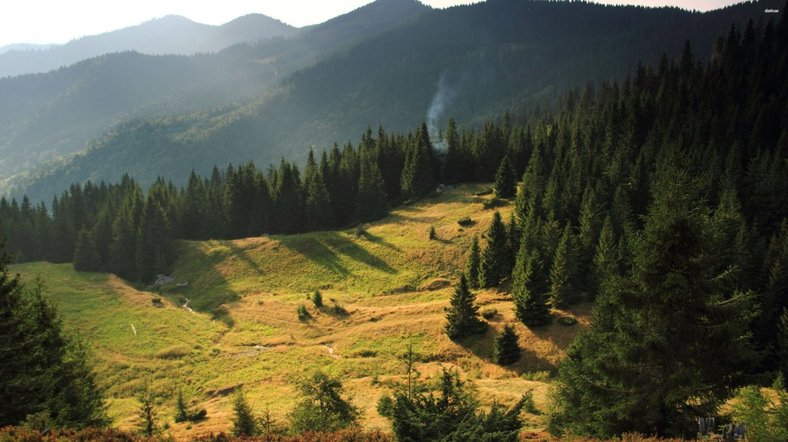

Кожна людина, котра зупиняється на декілька днів ранньою весною у Карпатах, може спостерігати чимало чудесних картин, котрі створює природа: тріскання льоду, який сковував гірські річки, яке відбувається одночасно з появою перших зелених травинок, пробудження усіх рослин від зимового сну. Тут все відбувається дуже стрімко, тому туристи можуть побачити значні зміни за короткий час, прекрасні рослини, які ховають в собі гори Карпати.
Це посилання на інший веб-сайт.
